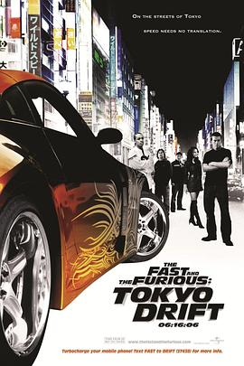

速度与激情3：东京漂移 / The Fast and the Furious: Tokyo Drift
又名：狂野时速：漂移东京(港) / 玩命关头3：东京甩尾(台) / The Fast and the Furious 3
最差的一部？
作品信息
| 导演 | 林诣彬 |
| 编剧 | 克里斯·摩根 |
| 主演 | 卢卡斯·布莱克 / 纳塔莉·凯利 / 姜成镐 / 布莱恩·泰 / 鲍沃 / 莱昂纳多·南 / 布莱恩·古德曼 / 千叶真一 / 扎切里·泰·布莱恩 / 北川景子 / 真木阳子 / 范·迪塞尔 / 妻夫木聪 |
| 类型 | 动作 / 犯罪 |
| 制片国家/地区 | 美国 / 德国 / 日本 |
| 语言 | 英语 / 日语 / 葡萄牙语 |
| 上映日期 | 2006-06-16(美国) |
| 片长 | 104分钟 |
| IMDb | tt0463985 |
最后一次看到是 2026-08-12T21:13:14+08:00 · 豆瓣原页